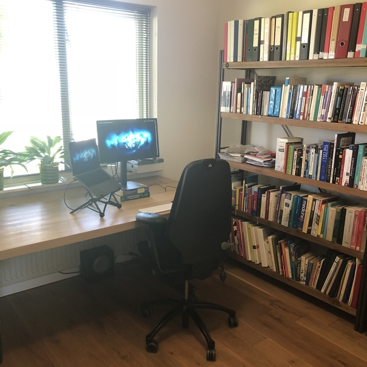

{% assign hide_extended = true %}

<div id="main" class="grid_9 alpha">
  <!-- limit:1 -->
  <div class="blog setup">
    <h2>Setup</h2>
    <p class="publishdate"><em>For getting things done!</em> </p>
    
    <p><em>My Home office</em>
      <br class="clear" />
    </p>
  </div>
  <div class="blog setup">
    <h2>Hardware</h2>
    <p class="publishdate">
      Last update: August 2018
      <ul class="clearfix">
        <li><b>MacBook Pro (13-inch, 2018, i7 2.7GHz quad-core, 1TB SSD, 16GB RAM)</b><br>
          Primary development device.
        </li>
        <li><b>MacBook Pro (13-inch, 2013, i7 2.8GHz, 1TB SSD, 16GB RAM)</b><br>
          Backup development device. I even also still have my Macbook
          Air 13 inch from 2011, which my wife is using now.
        </li>
        <li><b>LG Ultrafine 4K</b><br>
          Monitor + Book stand
        </li>
        <li><b>Roost Stand</b><br>
          laptop stand - <a href="https://www.therooststand.com/collections/roost-laptop-stand/products/roost-laptop-stand">Roost Stand</a>
        </li>
        <li><b>Apple Magic Keyboard</b><br>
          keyboard - <a href="https://www.apple.com/nl/shop/product/MLA22N/A/magic-keyboard-nederlands">Apple</a>
        </li>
        <li><b>Corsair M65 Mouse</b><br>
          Tried Trackpad, but nope. For a long time used the Magic
          Mouse, but using a real mouse now and never looked
          back. Also eyeing the Logitec MX Anywhere 2S for on the go.
          Mouse - <a href="https://www.amazon.de/Corsair-Vengeance-CH-9000022-EU-Performance-Schwarz/dp/B00BCHGSWE/">Amazon.de</a>
        </li>
        <li><b>Apple Watch</b><br>
          Watch - <a href="">Apple</a>
        </li>
        <li><b>Sony MDR</b><br>
          headset - <a href="">Tweakers</a>
        </li>
        <li><b>iPhone 8</b><br>
          phone - <a href="">Apple</a>
        </li>
        <li><b>iPad 2017</b><br>
          iPad - <a href="">Apple</a>
        </li>
        <li><b>Kindle Oasis</b><br>
          Kindle - <a href="">Amazon</a>
        </li>
      </ul>
      <br class="clear" />
    </p>
  </div>

  <div class="blog setup">
    <h2>Furniture</h2>
    <p class="publishdate">My office desk and chair.
      <ul class="clearfix">
        <li><b>Chair</b><br>
          Chair - <a href="">???</a>
        </li>
        <li><b>Desk</b><br>
          Wooden desk - <a href="">???</a>
        </li>
      </ul>
      <br class="clear" />
    </p>
  </div>


  <div class="blog setup">
    <h2>Software</h2>
    <p class="publishdate">All the software I install when setting up
    a new Laptop, and which I use on a daily basis.
      <ul class="clearfix">
        <li><b>Emacs</b><br>
          Primary Editor. Vim for Remote servers.
        </li>
        <li><b>iTerm 2</b><br>
          With Fish Shell
        </li>
        <li><b>Google Chrome</b><br>
          Vimium. Use Firefox for clients.
        </li>
        <li><b>Bear</b><br>
          Used to use Evernote
        </li>
        <li><b>iStat Menu</b><br>
          Menu bar stats
        </li>
        <li><b>Dropbox</b><br>
          Send Camera roll there. Also to Google and iCloud.
        </li>
        <li><b>Slack</b><br>
          Separate app and not in Browser.
        </li>
        <li><b>1 Password</b><br>
          Password management
        </li>
        <li><b>Beamer</b><br>
          Stream to apple tv. On laptop use VLC.
        </li>
        <li><b>Caffeine</b><br>
          Keep your macbook on.
        </li>
        <li><b>Apptivate</b><br>
          Global keyboard shortcuts
        </li>
        <li><b>Google plus screensaver photos</b><br>
          Screensaver. CMD-0 to go to sleep (Created with Automator).
        </li>
        <li><b>BetterSnapTool</b><br>
          Maximize screens.
        </li>
        <li><b>BetterTouchTool</b><br>
          Killing the Touchbar
        </li>
      </ul>
      <br class="clear" />
    </p>
  </div>

  <div class="blog setup">
    <h2>Work habits</h2>
    <p class="publishdate">
      I have written before about:
      <a href="2015/02/03/my-system-to-win-big">My System to win big.</a>
      <a href="/2015/02/11/coursera-courses">Coursera Courses</a>

      <br class="clear" />
    </p>
  </div>


</div> <!-- end main -->
